대기환경산업기사 (2009-05-10 기출문제)
1과목: 대기오염개론
1. 다음 특정물질의 종류와 그 화학식의 연결로 옳지 않은 것은?
- CFC-214 : C3F4Cl4
- Halon-2402 : CF2BrCl
- HCFC-133 : C2H2F4Cl
- HCFC-222 : C3HF2Cl5
(정답률: 84%)

2. 다음 광화학 스모그(Photochemical Smog)에 대한 설명 중 옳은 것은?
- 태양광선 중 주로 적외선에 의해 강한 광화학 반응을 일으켜 광화학 스모그를 생성한다.
- 대기 중의 PBN(PeroxyButyl Nitrate)의 농도는 PAN과 비슷하며, PPN(PeroxyPropionyl Nitrate)은 PAN의 약 2배 정도이다.
- 과산화기가 산소와 반응하여 오존이 생성될 수도 있다.
- PAN은 안정한 화합물이므로 광화학반응에 의해 분해되지 않는다.
(정답률: 85%)
3. 다음 중 대기 내에서 금속의 부식속도가 일반적으로 빠른 것부터 순서대로 연결된 것은?
- 알루미늄 ＞ 철 ＞ 아연 ＞ 구리
- 구리 ＞ 아연 ＞ 철 ＞ 알루미늄
- 철 ＞ 아연 ＞ 구리 ＞ 알루미늄
- 철 ＞ 알루미늄 ＞ 아연 ＞ 구리
(정답률: 90%)
4. 대기 중 질소산화물이 광화학반응을 하여 광화학 스모그를 형성할 때 일반적으로 어떤 종류의 탄화수소가 가장 유리한가?
- Mehtane 계 HC
- Trans 계 HC
- Olefin 계 HC
- Saturated HC
(정답률: 95%)
5. 다음 가스상 대기오염물질 중 식물에 영향이 가장 크며, 잎의 끝 또는 가장자리가 타거나 발육부진 등 특히 식물의 어린 잎에 피해가 큰 물질은?
- 오존
- 아황산가스
- 질소산화물
- 플루오르화수소
(정답률: 90%)
6. 경유를 사용하는 디젤자동차에 대한 일반적인 설명으로 틀린 것은?
- 압축비가 높아 최대효율이 가솔린 자동차에 비해 1.5배 정도이며, 연비는 가솔린기관에 비해 낮은 편이다.
- 압축비가 높아 소음과 진동이 큰 편이다.
- NOx와 매연이 문제가 된다.
- 기계식 분사 또는 전자제어 분사방식으로 연료를 공급한다.
(정답률: 86%)
7. DME(Dimethyl Ether) 연료에 관한 설명으로 옳지 않은 것은?
- 산소함유율이 34.8% 정도로 높아 연소시 매연이 적은 편이다.
- 점도가 경유에 비해 높으며, 금속의 부식성이 문제가 된다.
- 고무류와 반응하므로 재질에 주의해야 하며, 세탄가가 55 이상으로 높아 경유를 대체할 수 있다.
- 물성이 LPG와 유사한 특성이 있으며, 발열량은 경유에 비해 낮은 편이다.
(정답률: 65%)
8. 냄새물질에 관한 설명으로 옳지 않은 것은?
- 락톤 및 케톤의 화합물은 환상이 작을수록 냄새가 강해지고, 탄소수가 5~6 일 때 가장 강하다.
- 불포화도가 높으면 냄새가 보다 강하게 난다.
- 분자내 수산기의 수는 1개 일 때가 가장 강하다.
- 물리적 자극량과 인간의 감각강도의 관계는 웨버 훼히너(Weber - Fechner)법칙이 잘맞고 후각에도 잘 적용된다.
(정답률: 74%)
9. 역사적 대기오염사건 중 런던형 스모그 사건의 설명으로 가장 거리가 먼 것은?
- 발생기온 : 4℃ 이하
- 화학반응 : 산화반응
- 발생기간 : 아침, 저녁
- 역전종류 : 복사성 역전
(정답률: 95%)
10. 오존층과 관련된 설명으로 가장 거리가 먼 것은?
- 오존층이란 성층권에서도 오존이 더욱 밀집해 분포하는 지상 약 20~30km 구간을 말한다.
- 오존층에서는 오존의 생성과 소멸이 계속적으로 일어나면서 오존의 농도를 유지하며 또한 지표면의 생물체에 유해한 자외선을 흡수한다.
- 지구 전체의 평균 오존량은 약 300 Dobson 정도이고, 지리적 또는 계절적으로 평균치의 ±50% 정도까지 변화한다.
- CFC는 독성과 활성이 강한 물질로서 대기중으로 배출될 경우 빠르게 오존층에 도달하며, 비엔나협약을 통하여 생산과 소비량을 줄이기로 결의하였다.
(정답률: 60%)
11. 어느 도시지역이 대기오염으로 인하여 시골지역보다 태양의 복사열량이 10% 감소한다고 한다. 도시지역의 지상온도가 255K 일 때 시골지역의 지상온도는 얼마가 되겠는가? (단, 스테판 볼츠만의 법칙을 이용한다.)
- 약 262K
- 약 269K
- 약 275K
- 약 288K
(정답률: 70%)
12. 다음 중 온실효과의 기여도가 가장 높은 것은?
- N2O
- CFC 11 & 12
- CO2
- CH4
(정답률: 86%)
13. 보통 가을로부터 봄에 걸쳐 날씨가 좋고, 바람이 약하며, 습도가 적을 때 자정 이후 아침까지 잘 발생하고, 낮이되면 일사로 인해 지면이 가열되면 곧 소멸되는 역전의 형태는?
- Radiative inversion
- Subsidence inversion
- Lofting inversion
- Coning inversion
(정답률: 81%)
14. 대기오염현상에 대한 설명으로 옳지 않은 것은?
- 환경대기 중 미세먼지는 황산화물과 공존하면 더 큰 피해를 준다.
- SO2는 무색이고 자극성 냄새를 가지고 있는 가스상 오염물질로 비중은 약 2.2이다.
- 카르보닐황은 대류권에서 매우 안정하기 때문에 거의 화학적인 반응을 하지 않고 서서히 성층권으로 유입된다.
- 멕시코의 포자리카 사건은 산업시설물에서 누출된 메틸이소시아네이트에 의해 발생한 것이다.
(정답률: 95%)
15. 할로겐화 탄화수소(Halogenated hydrocarbon)류에 관한 설명으로 옳지 않은 것은?
- 할로겐화 탄화수소의 독성은 화합물에 따라 차이가 있으나, 다발성이며 중독성이다.
- 대부분의 할로겐화 탄화수소 화합물은 중추신경계 억제작용과 점막에 대한 중등도의 자극효과를 가진다.
- 사염화탄소는 가열하면 포스겐이나 염소로 분해되며, 신장장애를 유발하며, 간에 대한 독작용이 심하다.
- 할로겐화 탄화수소는 탄화수소 화합물 중 수소원소가 할로겐원소로 치환된 것으로 가연성과 폭발성이 강하고, 비점이 200℃ 이상으로 높아 상온에서는 안정하다.
(정답률: 95%)
16. 다음은 대기오염물질에 관한 설명이다. ( )안에 가장 적합한 것은?
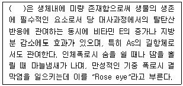
- Vanadium
- Tallium
- Selenium
- Beryllium
(정답률: 85%)
17. 공기 중에서 직경 2㎛의 구형 매연입자가 스토크스 법칙을 만족하며 침강할 때 종말 침강속도는? (단, 매연입자의 밀도는 2.5g/cm3, 공기의 밀도는 무시하며, 공기의 점도는 1.81×10-4g/cm·sec)
- 0.015 cm/s
- 0.03 cm/sec
- 0.⑤5 cm/s
- 0.075 cm/s
(정답률: 91%)
18. 유효굴뚝높이 60m에서 유량 980000m3/day, SO2 1200ppm으로 배출되고 있다. 이때 최대 지표농도(ppb)는? (단, Sutton의 확산식을 사용하고, 풍속은 6m/s, 이 조건에서 확산계수 Ky= 0.15, Kz= 0.18 이다.)
- 485
- 361
- 177
- 96
(정답률: 82%)
19. 다음은 태양에너지의 복사와 관련된 법칙이다. ( )안에 알맞은 것은?
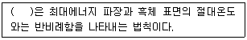
- 알베도 법칙
- 램버트 - 비어의 법칙
- 플랑크 법칙
- 비인의 변위법칙
(정답률: 82%)
20. 다음 특정물질 중 오존 파괴지수가 가장 높은 것은?
- C2H2FCl3
- C2H2F3Cl
- CHFBr2
- CH2FBr
(정답률: 60%)
2과목: 대기오염 공정시험 기준(방법)
21. 다음은 용기에 관한 설명이다. ( )안에 가장 적합한 것은?
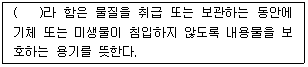
- 밀봉용기
- 밀폐용기
- 기밀용기
- 차광용기
(정답률: 74%)
22. 환경대기 내의 옥시단트(오존으로서) 측정방법 중 중성요오드화 칼륨법(수동)에 관한 설명으로 틀린 것은?
- 시료를 채취한 후 1시간이내에 분석할 수 있을 때 사용할 수 있으며 1시간내에 측정할 수 없을 때는 알칼리성요오드화 칼륨법을 사용하여야 한다.
- 대기중에 존재하는 오존과 다른 옥시단트가 pH 6.8의 요오드화 칼륨 용액에 흡수되면 옥시단트 농도에 해당하는 요오드가 유리되며 이 유리된 요오드를 파장 217nm에서 흡광도를 측정하여 정량한다.
- 산화성 가스로는 아황산가스 및 황화수소가 있으며 이들은 부(-)의 영향을 미친다.
- PAN은 오존의 당량, 몰, 농도의 약 50%의 영향을 미친다.
(정답률: 69%)
23. 흡광광도계에서 빛의 흡수율이 85% 일 때 흡광도는?
- 약 0.07
- 약 0.18
- 약 0.46
- 약 0.82
(정답률: 63%)
24. 0.1N H2SO4 용액 1000mL를 만들려고 한다. 95% H2SO4(비중 1.84)를 약 몇 mL 취하여야 하는가?
- 약 1.5mL
- 약 3mL
- 약 4.5mL
- 약 6mL
(정답률: 70%)
25. 굴뚝배출가스 중의 아황산가스를 연속적으로 자동측정하는 방법으로 가장 거리가 먼 것은?
- 용액전도율법
- 적외선흡수법
- 불꽃광도법
- 광투과법
(정답률: 61%)
26. 흡광광도법에서 램버어트 비어(Lambert - Beer)의 법칙에 따른 흡광도의 식으로 옳은 것은? (단, Io : 입사광의 강도, It : 투사광의 강도, t=It/Io이다.)
- 10t
- t × 100
- log 1/t
- log t
(정답률: 75%)
27. 원자흡광광도법에서 사용되는 가연성 가스와 조연성 가스의 조합으로 옳지 않은 것은?
- 수소 - 공기
- 아세틸렌 - 공기
- 아세틸렌 - 아산화질소
- 헬륨 - 산소
(정답률: 80%)
28. 굴뚝 배출가스 중 이황화탄소의 분석방법에 관한 설명으로 옳지 않은 것은?
- 자외선 가시선 분광법(흡광광도법)은 디에틸아민동 용액에서 시료가스를 흡수시켜 생성된 디에틸 디티오카바민산동의 흡광도를 545nm의 파장에서 측정하여 이황화탄소를 정량한다.
- 불꽃광도검출기를 구비한 가스크로마토그래프를 사용하여 정량하는 방법은 이황화탄소농도 0.5V/Vppm이상의 분석에 적합하다.
- 자외선 가시선 분광법(흡광광도법)은 시료가스채취량 10L인 경우 배출가스 중의 이황화탄소 농도 3~60V/Vppm의 분석에 적합하다.
- 가스크로마토그래프법에서 운반가스는 순도 99.9% 이상의 질소 또는 순도 99.8% 이상의 헬륨으로 한다.
(정답률: 44%)
29. 굴뚝 배출가스 중 알데히드류를 액체크로마토그래프법(HPLC)으로 분석 시 사용하는 흡수액은?
- P - Dichlorobenzene
- Acetonitrile
- 2, 4 - DNPH(Dinitrophenylhydrazine)
- Tetrahydrofuran
(정답률: 75%)
30. 다음은 원자흡광광도법에서 검량선 작성과 정량법에 관한 설명이다. ( )안에 가장 적합한 것은?
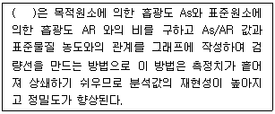
- 내부표준법
- 외부표준법
- 표준첨가법
- 검량선법
(정답률: 65%)
31. 굴뚝 배출가스 내의 페놀류의 분석방법 중 4 - 아미노안티피린법에 관한 설명으로 옳지 않은 것은?
- 시료 중의 페놀류는 붕산용액(0.5W/V%)에 흡수시켜 포집한다.
- 흡수액의 pH를 10±0.2로 조절한 후 여기에 4 - 아미노안티피린 용액과 페리시안산 칼륨용액을 가한다.
- 510nm의 가시부에서의 흡광도를 측정하여 페놀류의 농도를 산출한다.
- 시료가스 채취량이 10L인 경우 시료 중의 페놀류의 농도가 1~20V/Vppm 범위의 분석에 적합하다.
(정답률: 71%)
32. HCl 배출허용기준이 30ppm인 소각시설에서의 측정결과가 다음과 같았다. 이 때 표준산소농도로 보정한 HCl의 농도는?
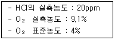
- 14ppm
- 21ppm
- 28.6ppm
- 42.9ppm
(정답률: 73%)
33. 다음 중 가스크로마토그래프법에서 일반적으로 사용하는 고정상 액체의 종류에 따른 물질명의 연결로 옳지 않은 것은?
- 탄화수소계 - 스쿠아란
- 실리콘계 - 디메틸술포란
- 탄화수소계 - 고진공 그리이스
- 실리콘계 - 불화규소
(정답률: 43%)
34. 다음은 분석 대상 가스에 따른 분석방법 및 흡수액에 대한 연결이다. 옳지 않은 것은?
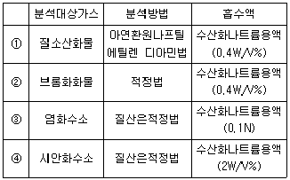
- ①
- ②
- ③
- ④
(정답률: 62%)
35. A굴뚝에서 배출되는 매연을 링겔만 매연농도표를 사용하여 측정한 결과 다음과 같았다. 이 때 매연의 농도(%)는?
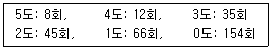
- 1.1%
- 10.9%
- 21.8%
- 42.0%
(정답률: 70%)
36. 비분산 적외선 분석계의 성능 유지기준으로 틀린 것은?
- 재현성 : 동일 측정조건에서 제로가스와 스펜가스를 번갈아 10회 도입하여 각각의 측정값의 평균으로부터 편차를 구하여 이 편차는 전체 눈금의 ±1% 이내어어야 한다.
- 감도 : 전체 눈금의 ±1% 이하에 해당하는 농도변화를 검출할 수 있는 것이어야 한다.
- 측정가스의 유량변화에 대한 안정성 : 측정가스의 유량이 표시한 기준유량에 대하여 ±2% 이내에서 변동하여도 성능에 지장이 있어서는 안된다.
- 전원 변동에 대한 안전성 : 전원전압이 설정 전압의 ±10% 이내로 변화하였을 때 지시치 변화는 전체눈금의 ±1%이내여야 하고, 주파수가 설정 주파수의 ±2%에서 변동해도 성능에 지장이 있어서는 안된다.
(정답률: 63%)
37. 다음은 굴뚝 배출가스 중의 납화합물을 자외선 가시선 분광법(흡광광도법)으로 분석하는 방법에 관한 설명이다. ( )안에 알맞은 것은?
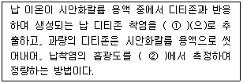
- ① 사염화탄소, ② 450nm
- ① 사염화탄소 ② 520nm
- ① 클로로폼, ② 520nm
- ① 클로로폼, ② 450nm
(정답률: 60%)
38. 원자흡수분광광도법(원자흡광광도법)에 의한 각 측정금속별 측정파장 및 정량 범위의 연결로 옳지 않은 것은?
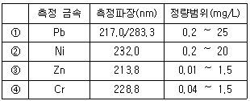
- ①
- ②
- ③
- ④
(정답률: 50%)
39. 다음 용어 구성 중 가스크로마토그래프법과 관계가 있는 것만으로 옳게 나열된 것은?
- 보유시간, 분리관오븐, 수소염이온화검출기
- 보유용량, 열전도도검출기, 단색화장치
- 운반가스, 중공음극램프, 검출기오븐
- 시료도입부, 회전섹터, 감도조정부
(정답률: 60%)
40. 연료용 유류 중의 황함유량을 측정하기 위한 분석방법에 해당하는 것은?
- 전기화학식 분석법
- 광산란법
- 연소관식 공기법
- 광투과율법
(정답률: 63%)
3과목: 대기오염방지기술
41. 세정식집진장치의 특성과 가장 거리가 먼 것은?
- 조해성, 점착성 먼지 제거가 가능하다.
- 소수성 입자의 집진효과가 크다.
- 한번 제거된 입자는 보통 처리가스 속으로 재비산되지 않는다.
- 고온가스 및 연소, 폭발성 가스의 처리가 가능하다.
(정답률: 60%)
42. 입자가 미세할수록 표면에너지는 커지게 되어 다른 입자간에 부착하거나 혹은 동종 입자 간에 응집이 이루어지는데 이러한 현상이 생기게 하는 결한력 중 거리가 먼것은?
- 분자간 인력
- 정전기적 인력
- 브라운 운동에 의한 확산력
- 입자에 작용하는 항력
(정답률: 53%)
43. 다음 황산화물 처리를 위한 화학반응식 중 산화법에 해당하지 않는 것은?
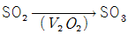
- H2SO4 + 3H2S → 4S + 4H2O
- SO3 + 2NH4OH → (NH4)2SO4 + H2O
- SO3 + H2O → H2SO4
(정답률: 53%)
44. 두 종류의 집진장치를 직렬로 연결하였다. 1차 집진장치의 입구먼지농도는 13g/m3, 2차 집진장치의 출구먼지농도는 0.4g/m3이다. 2차 집진장치의 처리효율을 90%라 할때, 1차 집진장치의 집진효율은? (단, 기타 조건은 같다.)
- 약 56%
- 약 69%
- 약 74%
- 약 76%
(정답률: 62%)
45. A집진장치의 입구와 출구에서 먼지농도를 측정한 결과 각각 30g/Sm3, 300mg/Sm3이었고, 또한 입구와 출구의 먼지 중 입경범위가 0~5㎛인 시료먼지에 대한 부분 집진율은?
- 99%
- 97%
- 95%
- 93%
(정답률: 34%)
46. A작업장에서 배출하는 먼지의 입경을 Rosin - Rammler분포로 표시하면 50% 누적확률에 대응하는 입경이 35㎛가 된다. 이 때 10㎛ 이하의 입자가 차지하는 분율(%)은? (단, 입경지수는 1 이다.)
- 약 82%
- 약 72%
- 약 28%
- 약 18%
(정답률: 37%)
47. 여과집진장치에서 여과포가 마멸되어 집진율이 99.9%에서 99%로 낮아졌을 때 출구에서 배출되는 먼지 농도는 어떻게 되겠는가? (단, 기타 조건은 변경이 없다고 가정한다.)
- 원래의 1/2배
- 원래의 2배
- 원래의 9배
- 원래의 10배
(정답률: 50%)
48. 다음 중 황산화물 처리방법으로 가장 거리가 먼 것은?
- 석회석 주입법
- 석회수 세정법
- 암모니아 흡수법
- 2단 연소법
(정답률: 69%)
49. 다음 중 석탄의 탄화도가 증가할수록 가지는 성질로 옳지 않은 것은?
- 수분 및 휘발분이 감소한다.
- 고정탄소 및 산소의 양이 증가한다.
- 발열량이 증가하고, 착화온도가 높아진다.
- 고정탄소(%)/휘발분(%) 이 증가한다.
(정답률: 59%)
50. 세정집진장치의 효율 향상에 관한 설명 중 옳지 않은 것은?
- 벤츄리스크러버에서는 Throat부의 배기가스 속도를 크게 해 준다.
- 분무액의 압력은 높게, 액적, 액막 등의 표면적은 크게 해 준다.
- 충전탑에서는 탑내의 처리가스 속도를 크게 해 준다.
- 회전식에서는 원주속도를 크게 해 준다.
(정답률: 48%)
51. 온도 25℃의 염산액적을 포함한 배출가스 1.4m3/sec를 폭 9m, 높이 6m, 길이 15m 의 침강집진기로 집진제거한다. 염산 비중이 1.6 이라면 이 침강집진기가 집진할 수 있는 최소 입경(㎛)은? (단, 25℃ 에서의 공기점도는 1.85×10-5kg/m·s)
- 약 10㎛
- 약 12㎛
- 약 15㎛
- 약 18㎛
(정답률: 24%)
52. 다음 중 경유에 관한 설명으로 옳지 않은 것은?
- 착화성 여부는 옥탄값(적정 옥탄가 : 5~10)으로 표시하며, 착화성이 나쁘면 Diesel -Knocking을 일으킨다.
- 비중은 0.8~0.9 정도이고, 정제한 것은 무색에 가깝다.
- 착화성이 좋은 연료 사용시 디젤엔진의 압축비가 가솔린엔진보다 매우 크므로 열효율이 높은 출력을 얻을 수 있다.
- 등유와 중유의 중간에 유출되는 성분으로 비점은 대략 200~320℃ 정도이다.
(정답률: 37%)
53. A집진장치의 압력손실이 600mmH2O, 처리가스량이 750m3/min, 송풍기 효율이 75%, 여유율이 1.32일 때 소요동력(kW)?
- 약 124 kW
- 약 129 kW
- 약 132 kW
- 약 152 kW
(정답률: 60%)
54. 기체연료에 관한 다음 설명 중 거리가 먼 것은?
- 발생로가스는 가열된 석탄 또는 코크스에 공기와 수증기를 연속적으로 공급하여 부분적으로 산화반응시킴으로써 얻어진다.
- 오일가스는 석탄의 건류 및 가스화에 의하여 발생된 가스로서 주요 가연성분은 메탄 및 프로판이다.
- 고로가스는 용광로에서 선철을 제조할 때 발생한다.
- 전로가스는 선철을 제강과정에서 강철로 만드는 과정에서 발생하는 가스로서 주성분은 일산화탄소이다.
(정답률: 48%)
55. 다음 중 다공성 흡착제인 활성탄으로 제거하기에 가장 효과가 낮은 유해가스는?
- 알코올류
- 일산화탄소
- 담배연기
- 벤젠
(정답률: 62%)
56. 후드의 유입계수와 속도압이 각각 0.87, 16mmH2O 일 때, 후드의 압력손실은?
- 약 3.5 mmH2O
- 약 5 mmH2O
- 약 6.5 mmH2O
- 약 8 mmH2O
(정답률: 71%)
57. 직경 400mm, 유효높이 12m인 원통형 백필터를 사용하여 먼지농도 6g/m3인 배출가스를 20m3/sec 으로 처리하고자 한다. 겉보기 여과속도를 1.2cm/sec로 할 때 필요한 백필터의 수는?
- 1⑤개
- 111개
- 116개
- 121개
(정답률: 53%)
58. 여과집진장치에 관한 다음 설명 중 가장 거리가 먼 것은?
- 내면여과는 여과속도가 15m/s, 압력손실은 보통 150mmH2O 정도이다.
- Package형 Filter, 방사성 먼지용 Air Filter 등은 내면여과 방식에 해당된다.
- 내면여과는 일반적으로 건식으로서 사용되지만 점착성 기름을 여재에 바른 습식도 있다.
- 여포는 내열성이 약하므로 가스온도가 250℃를 넘지 않도록 주의하고, 고온가스 냉각시에는 산노점 이상으로 유지해야 한다.
(정답률: 47%)
59. A전기집진장치의 집진효율은 90%이다. 이 때 집진판의 면적을 1.5배로 증가시키면 집진효율은 몇 %가 되는가? (단, 기타 조건은 같다.)
- 약 93%
- 약 95%
- 약 97%
- 약 99%
(정답률: 43%)
60. 불화수소를 함유하는 배기가스를 충전 흡수탑을 이용하여 흡수율 92.5%로 기대하고 처리하고자 한다. 기상총괄이동단위높이(HOG)가 0.5m 일 때 충전높이는? (단, 흡수액상 불화수소의 평형분압은 0 이다.)
- 1.01m
- 1.15m
- 1.3m
- 1.5m
(정답률: 46%)
4과목: 대기환경 관계 법규
61. 대기환경보전법규상 2009년 1월 1일 이후 제작자동차의 배출가스 보증기간 적용기준으로 틀린 것은?
- 휘발유 이륜자동차 : 2년 또는 10000km
- 휘발유 대형승용차·화물차 : 2년 또는 160000km
- 가스 초대형승용차·화물차 : 2년 또는 160000km
- 가스 경자동차 : 5년 또는 80000km
(정답률: 58%)
62. 대기환경보전법규상 금속의 용융·제련 또는 열처리시설 중 대기오염물질 배출시설기준에 해당하지 않는 것은?
- 1회 주입연료 및 원료량의 합계가 0.5톤 이상인 용선로
- 용적이 0.5세제곱미터 이상인 알루미늄 정련용 전해로
- 풍구(노복)면의 횡단면적이 0.2제곱미터 이상인 제선로(용광로를 포함한다.)
- 노상면적이 4.5제곱미터 이상인 반사로
(정답률: 43%)
63. 대기환경보전법령상 '사업장의 연료사용량 감축 권고'조치를 하여야 하는 대기오염 경보발령 단계기준으로 가장 적합한 것은?
- 준주의보 발령단계
- 주의보 발령단계
- 경보 발령단계
- 중대경보 발령단계
(정답률: 45%)
64. 대기환경보전법규상 측정기기의 부착 및 운영 등과 관련한 행정처분기준 중 사업자가 부착한 굴뚝 자동측정기기의 측정결과를 굴뚝 원격감시체계 관제센터로 측정자료를 전송하지 아니한 경우의 각 위반차수별 행정처분기준(1차~4차순)으로 옳은 것은?
- 경고 - 조업정지 10일 - 조업정지 30일 - 허가취소 또는 폐쇄
- 경고 – 조치명령 - 조업정지 10일 - 조업정지 30일
- 조업정지 10일 - 조업정지 30일 - 개선명령- 허가취소
- 조업정지 30일 – 개선명령 - 허가취소 - 사업장 폐쇄
(정답률: 60%)
65. 대기환경보전법상 환경부장관이 대기오염물질과 온실가스를 줄여 대기환경을 개선하기 위한 대기환경개선 종합계획을 수립할 때 포함되어야 하는 사항으로 가장 거리가 먼 것은? (단, 그 밖에 대기환경개선을 위해 필요사항 등은 제외)
- 대기오염물질의 배출현황 및 전망
- 대기 중 온실가스의 농도 변화 현황 및 전망
- 황사 발생 감소를 위한 국제협력
- 기후변화로 인한 영향평가와 적응대책에 관한 사항
(정답률: 48%)
66. 대기환경보전법규상 위임업무 보고사항 중 배출부과금부과징수실적 및 체납처분현황의 보고횟수기준은?
- 수시
- 연 1회
- 연 2회
- 연 4회
(정답률: 45%)
67. 다중이용시설 등의 실내공기질 관리법규상 규정하고 있는 실내공간 오염물질에 해당하지 않는 것은?
- 브롬화수소(HBr)
- 미세먼지(PM 10)
- 폼알데하이드(HCHO)
- 총 부유세균
(정답률: 60%)
68. 대기환경보전법상 시·도의 조례로 정하는 바에 따른 운행차 배출가스 정밀검사를 받지 아니한 자에 대한 벌칙기준으로 옳은 것은? (단, 저공해자동차 등 환경부령으로 정하는 자동차로서 정밀검사를 받지 아니하여도 되는 자동차는 제외)
- 300만원 이하의 벌금
- 200만원 이하의 과태료
- 100만원 이하의 과태료
- 50만원 이하의 과태료
(정답률: 35%)
69. 대기환경보전법규상 특정대기유해물질이 아닌 것은?
- 벤지딘
- 아황산가스
- 이황화메틸
- 아세트알데하이드
(정답률: 44%)
70. 대기환경보전법상 자동차 정밀검사업무를 대행하는 교통안전공단 등이 고의로 검사업무를 부실하게 하여 업무정지처분을 받아야 하나, 공익상 필요하다고 인정할 경우 시·도지사가 그 업무 정지처분에 갈음하여 부과할 수 있는 과징금의 최대금액은?
- 2천만원
- 5천만원
- 1억원
- 2억원
(정답률: 43%)
71. 대기환경보전법규상 정밀검사대행자 및 지정사업자의 기술능력 및 시설·장비기준 중 용지, 건물면적 및 검사진로 기준으로 옳지 않은 것은?
- 건물면적은 사무실(검사원사무실, 수검자대기실 등을 포함한다.)은 20제곱미터 이상, 검사진로는 최소 100제곱미터 이상으로 하되, 눈·비 등으로 검사에 영향이 미치지 아니하도록 건물면적을 충분히 확보하여야 한다.
- 검사진로 규격은 너비 5m이상, 높이 4m 이상이어야 한다.
- 검사진로의 바닥은 차대동력계중심축상으로부터 전·후 5미터 이상 수평을 유지하여야 한다.
- 검사진로의 수는 차대동력계 수로 한다.
(정답률: 40%)
72. 대기환경보전법령상 대기배출시설 운영사업자는 오염물질 배출량과 배출허용기준의 준수여부를 확인할 수 있는 측정기기를 부착해야 하는데, 다음 중 굴뚝 자동측정기기에 해당하지 않는 것은?
- 유량·유속계
- 온도 측정기
- 풍향측정기
- 자료수집기
(정답률: 46%)
73. 대기환경보전법규상 시·도지사가 설치하는 대기오염 측정망의 종류에 해당하지않는 것은?
- 도시지역의 대기오염물질 농도를 측정하기 위한 도시대기측정망
- 도시의 시정장애의 정도를 파악하기 위한 시정거리측정망
- 도로변의 대기오염물질 농도를 측정하기 위한 도로변대기측정망
- 도시지역의 휘발성유기화합물 등의 농도를 측정하기 위한 광화학대기오염물질측정망
(정답률: 30%)
74. 대기환경보전법령상 선박디젤기관에서 배출되는 대기오염물질의 종류 중 대통령령으로 정하는 대기오염물질은?
- 휘발성 유기화합물질
- 다이옥신
- 질소산화물
- HAPS
(정답률: 50%)
75. 대기환경보전법규상 비산먼지 발생을 억제하기 위한 시설의 설치 및 필요한 조치에 관한 기준 중 수송 공정외 측면살수시설설치 규격기준으로 옳은 것은?
- 살수길이는 수송차량 전체길이의 1.5배 이상, 살수압은 1.5kg/cm2 이상으로 한다.
- 살수길이는 수송차량 전체길이의 1.5배 이상, 살수압은 3kg/cm2 이상으로 한다.
- 살수길이는 수송차량 전체길이의 3배 이상, 살수압은 1.5kg/cm2 이상으로 한다.
- 살수길이는 수송차량 전체길이의 3배 이상, 살수압은 3kg/cm2 이상으로 한다.
(정답률: 34%)
76. 다음은 다중이용시설 등의 실내공기질관리법령상 이 법의 적용대상이 되는 “대통령령으로 정하는 규모” 기준이다. ( )안에 알맞은 것은?
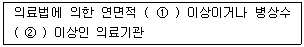
- ① 2천제곱미터, ② 100개
- ① 1천제곱미터, ② 100개
- ① 2천제곱미터, ② 200개
- ① 1천제곱미터, ② 200개
(정답률: 53%)
77. 환경정책기본법령상 8시간 대기환경기준치가 0.06ppm 이하인 것은?
- 아황산가스
- 일산화탄소
- 이산화질소
- 오존
(정답률: 60%)
78. 대기환경보전법령상 황함유기준에 부적합한 유류회수처리명령을 받은 자는 그 명령을 받은 날부터 이행완료보고서를 최대 며칠이내에 환경부장관 등에게 제출해야 하는가?
- 5일 이내
- 7일 이내
- 10일 이내
- 30일 이내
(정답률: 39%)
79. 대기환경보전법규상 배출허용기준초과에 따른 개선명령을 받은 경우로서 개선하여야 할 사항이 배출시설 또는 방지시설의 운전미숙에 해당할 때, 개선계획서 제출시 첨부되어야 할 사항으로 거리가 먼 것은?
- 대기오염물질 발생량
- 방지시설의 처리능력
- 배출허용기준 초과사유
- 공사기간 및 공사비
(정답률: 53%)
80. 대기환경보전법규상 배출시설의 시간당 대기오염물질 발생량 산정을 위해 황함량 0.1% 등유를 난방, 산업, 발전에 사용할 경우 황산화물의 배출계수는 얼마를 적용하는가? (단, S는 황함량)
- 9.4S
- 10.2S
- 14.3S
- 17.0S
(정답률: 41%)
Halon-2402는 CF2BrCl로 이루어져 있으며, CF2와 Br, Cl의 비율이 일치하므로 옳은 것이다.
HCFC-133은 C, H, F, Cl의 원소로 이루어져 있으며, 각 원소의 비율이 일치하므로 옳은 것이다.
HCFC-222는 C, H, F, Cl의 원소로 이루어져 있으며, 각 원소의 비율이 일치하지 않기 때문에 옳지 않은 것이다.